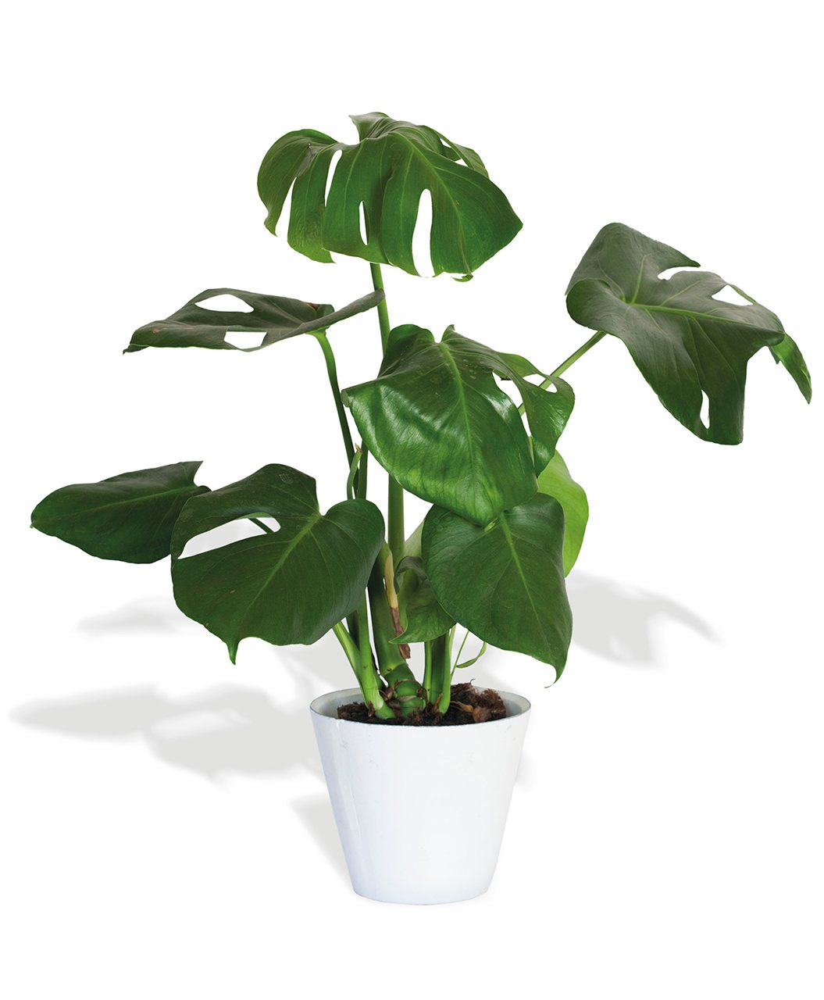

Artículos y Guías Botánicas.
Aprende más sobre el cuidado y curiosidades del mundo floral.

¿Cómo saber cuándo regar tus plantas?
Descubre los trucos sencillos para medir la humedad del suelo y evitar el exceso de agua en las raíces. Learn more

Las 5 mejores plantas para purificar el aire
Conoce qué variedades ayudan a mejorar la calidad del aire dentro de tu habitación u oficina. Learn more

Cuidados esenciales para las orquídeas
Aprende la iluminación, humedad y sustrato ideal que necesitan para florecer todo el año. Learn more